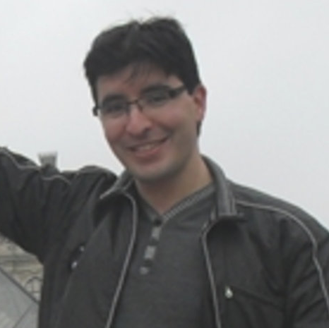
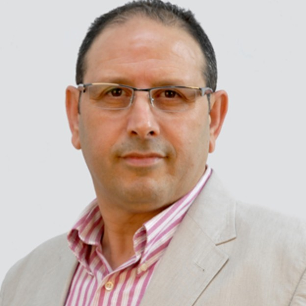
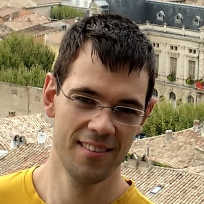
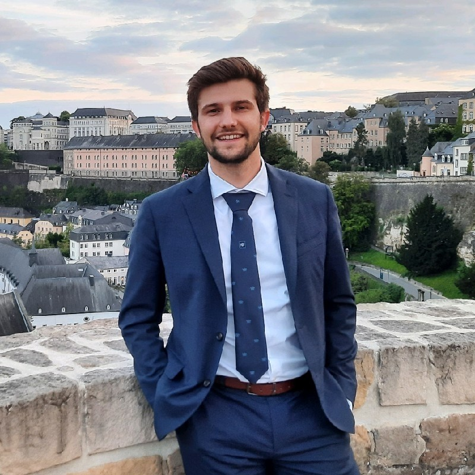
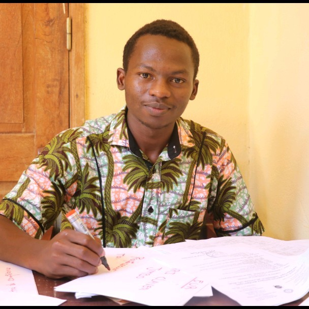
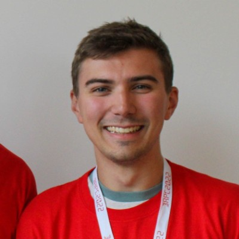

Saïd Mahmoudi
Professor · Lab manager
Computer vision, deep learning and medical image analysis, including brain MRI segmentation and disease classification.
Faculty, researchers and collaborators working on medical AI, smart farming and secure distributed systems.
Professor · Lab manager
Computer vision, deep learning and medical image analysis, including brain MRI segmentation and disease classification.

Professor · Co-manager
Explainable and edge AI, distributed learning and efficient use of high-performance computing resources.

Professor · Co-manager
Image analysis and medical AI, including explainable models and learning from neurological and clinical data.
Post-doctoral researcher
Big data, cloud architectures and interoperable IoT platforms for smart farming, including WALLeSmart.

Assistant professor · Research collaborator
Computer networking and transport protocols, including QUIC and multipath communication.

PhD student
Federated learning, aggregation methods and secure collaborative models for medical imaging.

PhD student
Contact the lab for details of current research.
PhD student
AI-based security and anomaly detection for devices in the Internet of Medical Things.

PhD student
Multimodal learning for brain imaging and secure, decentralised federated learning.
PhD student
Contact the lab for details of current research.
PhD student
Multimodal modelling of Parkinson’s disease, cost-aware feature selection and fairness in clinical data analysis.
PhD student
Streaming data architectures for IoT, smart farming and connected healthcare monitoring.
PhD student
Deep learning for MRI analysis and automated segmentation of brain tumours.
Research summaries are based on linked profiles and publications. Visit the UMONS department directory for institutional contact information.